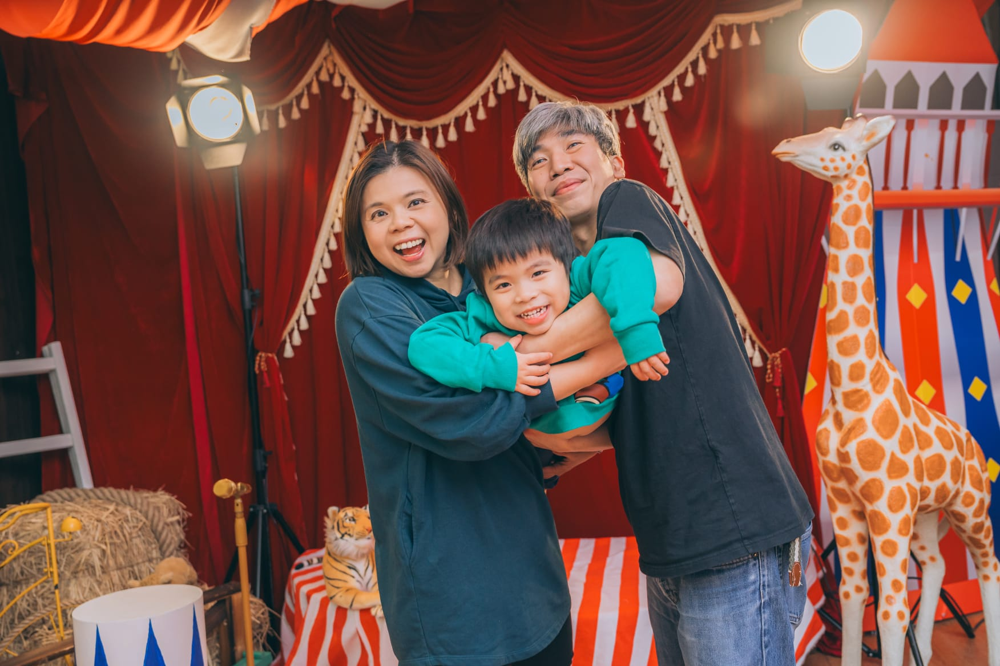

Introduction
Hello! My name is Howie Kwok, and I am 4 years old.
I am currently studying in K2 at Truth Baptist Church Glory Kindergarten (真理浸信會榮光幼兒園).
I am a curious and energetic child who loves to explore the world, learn new things, and try different activities. My parents encourage me to discover my interests through hands-on experiences, sports, travel, and language learning.
This page shares a little about my hobbies, personality, and learning journey.
Howie’s Learning Journey
Sports & Physical Activity
I enjoy moving, jumping, and learning how to control my body.
I have started learning Taekwondo, where I practise discipline, balance, and coordination. I enjoy following instructions and trying new movements.
🎥 Taekwondo Practice
Through sports, I am learning:
- Confidence
- Focus and discipline
- Physical coordination
Creativity & Life Skills
I enjoy helping in the kitchen and learning how food is prepared.
Cooking gives me opportunities to explore, observe, and participate in everyday life. It also helps me build patience, independence, and confidence.
🎥 Cooking Activity
Through cooking, I am learning:
- Practical life skills
- Patience and independence
- Creativity and curiosity
Learning Through Travel
My family believes the world is a wonderful classroom.
Through travel, I get to experience different places, cultures, foods, and environments. These experiences help me become more observant, adaptable, and curious about the world.
🇨🇳 Beijing Adventure
🇫🇷 France Adventure
🇯🇵 Japan Adventure
Through travel, I am learning:
- Curiosity about the world
- Cultural awareness
- Confidence in new environments
Language Development
I am learning both English and Chinese.
My parents support my language development through phonics, reading, recitation, and everyday conversation. These experiences help me build confidence in listening, speaking, and expressing myself.
🔤 Learning Phonics
📜 Chinese Poem Recitation
Through language learning, I am building:
- Listening and pronunciation skills
- Early literacy foundations
- Confidence in self-expression
Personality
Howie is a child who:
- Is curious and eager to explore new things
- Enjoys hands-on learning and active participation
- Is energetic, expressive, and observant
- Loves sharing experiences with family
Active and playful
He enjoys trying new activities, moving with confidence, and celebrating every little achievement.

Expressive and confident
He likes speaking, presenting, and sharing what he learns in a lively and engaging way.
Curious and caring
He loves exploring the world around him, especially animals and hands-on experiences that spark wonder.
He learns best through experience, interaction, and joyful exploration.
Family Philosophy
We believe childhood should be a time of exploration, curiosity, and joyful learning.
We also enjoy creating small interactive learning games to make learning fun and engaging. These games support his development in phonics, language, and early problem-solving through play.
Some of these learning activities can be viewed here:
🌟 Howie’s Learning Game Page
Rather than focusing only on academic outcomes, we hope to help Howie grow in:
- Confidence
- Curiosity
- Kindness
- A love for learning
We hope he can continue to grow in a nurturing environment that encourages creativity, discovery, and character development.
Thank you for taking the time to learn a little more about Howie.